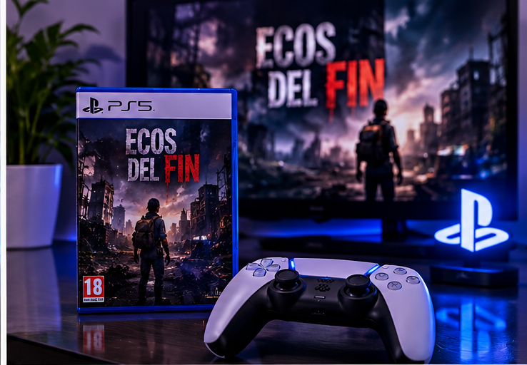

🌎 El mundo de Ecos del Fin

El mundo ha cambiado para siempre. Una misteriosa catástrofe ha destruido ciudades enteras y ha dejado a la humanidad luchando por sobrevivir.
En Ecos del Fin tendrás que recorrer un mundo postapocalíptico lleno de peligros, descubrir qué ocurrió y encontrar la verdad detrás del fin de la civilización.
Cada lugar puede esconder una pista, un recurso necesario para sobrevivir o un peligro que podría acabar con tu aventura.
🎮 Vive la experiencia
No se trata solamente de luchar. Tendrás que explorar, tomar decisiones y aprender a sobrevivir en un mundo donde cualquier amenaza puede aparecer cuando menos lo esperas.
- 🧟 Enfréntate a criaturas y zombis.
- 🗺️ Explora lugares abandonados.
- 🔎 Descubre pistas sobre la catástrofe.
- 🎒 Encuentra recursos para sobrevivir.
- ⚔️ Prepárate para enfrentarte al peligro.
La combinación de misterio, exploración y supervivencia convierte cada partida en una nueva experiencia.
🔥 ¿Por qué jugarlo?
Si te gustan los videojuegos de supervivencia, los mundos destruidos y las historias llenas de misterios, Ecos del Fin está pensado para ti.
La ambientación busca que el jugador sienta que realmente está explorando los últimos restos de una civilización.
No sabes qué encontrarás al doblar la siguiente esquina. Esa incertidumbre es parte de la aventura.
🎮 Ecos del Fin en acción
Prepárate para entrar en un mundo donde cada partida puede convertirse en una lucha por sobrevivir.
Vive la aventura

Una experiencia única
Sobrevive al peligro
🕹️ Información del juego
| Elemento | Información |
|---|---|
| Título | Ecos del Fin |
| Autora | Anacleta Nzang Nguema |
| Género | Aventura y supervivencia |
| Ambientación | Mundo postapocalíptico |
| Plataforma | PlayStation 5 |